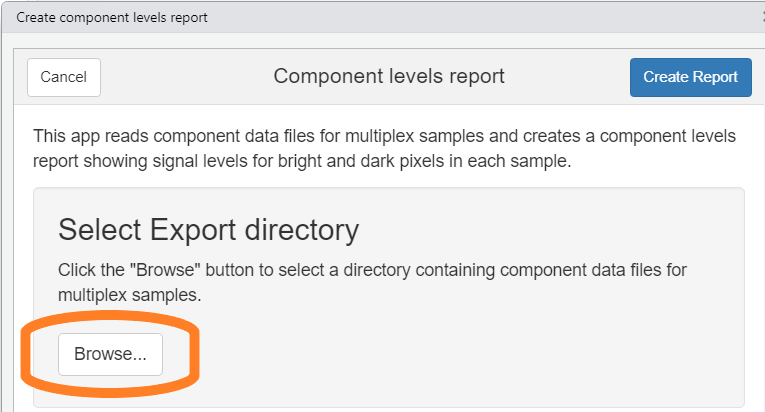
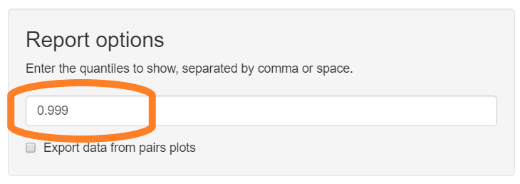
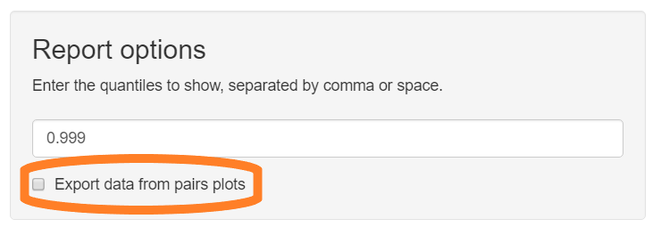

vignettes/component_levels_report.Rmd
component_levels_report.RmdThe component levels report analyzes unmixed, multiplex images to help evaluate staining and unmixing quality. This report shows the relative strength of each component and crosstalk between components.
The input to this report is an inForm export directory containing multiplex images which have been unmixed by inForm using a candidate spectral library.
Multiplex images are taken from slides stained with a multiple fluorophores and a counterstain. The export directory should contain component data files from one or more images in the experiment.
Click the “Browse” button in the “Select Export directory” section of the GUI. Use the directory selection dialog to select the directory containing exported component data files.

The component levels report shows the pixel intensity of each fluor in each image. Selected quantiles are shown with black bars and exported in CSV files. Enter the fractions corresponding to the quantiles of interest. The default value, 0.99, will show the signal level that is greater than 99% of the pixels in each image. This is a reasonable measure of peak signal intensity.
Enter the desired quantiles in the text field. Multiple values can be entered, separated by comma or space.

The component levels report includes “pairs plots” showing the expression levels of each component against each other component. These can help identify problematic crosstalk. Check the box “Export data from pairs plots” to have the report include text files containing the raw data for the plots.
